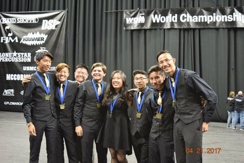
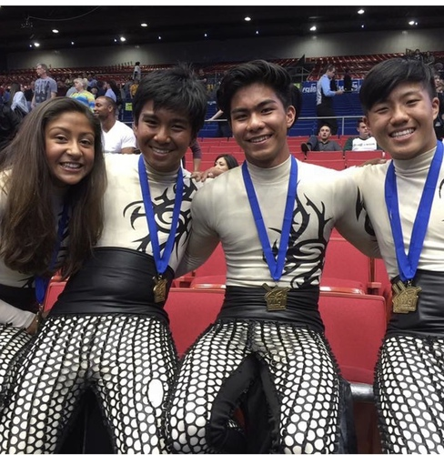
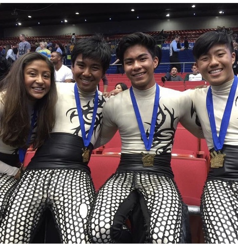

Jordan Kao
My name is Jordan Kao. I am currently attending the University of California Riverside and majoring in the field of sociology. Currently, I am affiliated with the 7 Leaves Cafe Chain, but only as a part-timer. My ultimate goal is to end up working in the Human Resources Department or become an industrial psychologists and study human behavior in the work environment. Some of my personal achievements up until this point in my life include attending and winning a world championship competition, becoming a full-time student at the University of California Riverside, and getting a chance to perform at a high level of national competition.
Coming from a culture that was a mix of Chinese and Korean traditions, I have firm roots that align with both Chinese and Korean branches. With family on both sides of the spectrum, I was able to take in the set expectations by each side and applied them into my life and my work ethic. In addition, I am currently trying to improve my linguistic abilities in each respective language, as I have family on either side that can only speak their respective native tongue. While my Chinese still needs quite a bit of work, my Korean is getting better, as I am able to identify all Korean characters and read them with the correct pronunciation. Alongside this soon to be hopeful trilingual, all the experiences I was able to behold has now become a part of my identity. Everything from what I prefer to even how I interact are all because of my ties with my culture. Even from the learning and experiencing of what my friends from different backgrounds have shown me, I am a more cultured person and readily open to any experiences people have to share.
During my free time, some of my hobbies include snowboarding, longboarding, and photography. When winter starts to roll in, I love taking a trip to the mountains and strapping on that snowboard and shredding down the white mountain slope, feeling the wind and frosty air hit my face. The adrenaline I get when riding down these slopes is what keeps bringing me back to snowboarding every year. This then translated into my longboarding hobby, as during the times I wasn’t able to be in that ski lodge, I turned to longboarding as a replacement for snowboarding, in which has now become a part of my life. In addition to being a hobby, it has now become a way I commute between classes and around campus. Even with all the wounds I have received from it, I never turned my face away from longboarding. Photography for me became a love hate passion, as I love to take candid photos and scenery shots as I am taken a breath from those moments that inspire me. Once I seen something extraordinary, where it is someone's performance, a radiating sunset, or even just a moment in time at a social event, I get the feeling to try and preserve the moment by means of taking a still shot of a moment and reliving the memory of the experience.
Experience
Boba Barista
• Assembled final drinks from made ingredients X
• Learned how to properly brew popular drinks and cook boba
• Experience with customer service
Fast Food Server
• Assembled poke bowls for customers
• Cleaned all dishes and did all front of house duties
Fast Food Server
• Assembled poke bowls and hot food items
• Cut fish and prep any other products
• Counted money from register post shift
• Training new employees
Education
UC Riverside
Portfolio



